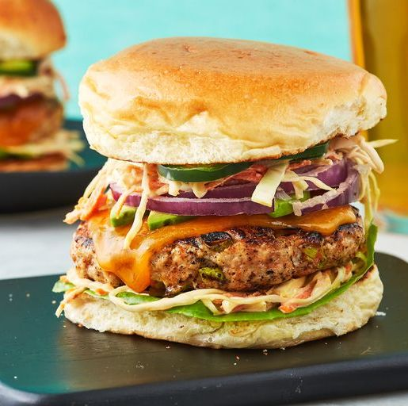

Hamburger

Hamburger[a] (tiếng Việt đọc là hăm-bơ-gơ hay hem-bơ-gơ, tiếng Anh:/ˈhæmbɜrɡər/, tiếng Đức: /ˈhɛmˌbœːɐ̯ɡɐ/ hoặc /ˈhamˌbʊʁɡɐ/) là một loại thức ăn bao gồm bánh mì kẹp thịt xay (thường là thịt bò) ở giữa. Miếng thịt có thể được nướng, chiên, hun khói hay nướng trên lửa. Hamburger thường ăn kèm với pho mát, rau diếp, cà chua, hành tây, dưa chuột muối chua, thịt xông khói, hoặc ớt; ngoài ra, các loại gia vị như sốt cà chua, mù tạt, sốt mayonnaise, đồ gia vị, hoặc "nước xốt đặc biệt", (thường là một biến tấu của sốt Thousand Island) cũng có thể thể rưới lên món bánh. Loại bánh hamburger có topping là pho mát được mọi người gọi là hamburger pho mát.[1]
Thuật ngữ "burger" cũng có thể chỉ đến miếng thịt (patty) đặt trên món bánh, đặc biệt là ở Vương quốc Anh, nơi thuật ngữ "patty" hiếm khi được sử dụng, hoặc chỉ đơn thuần là ám chỉ đến thịt bò xay. Vì từ hamburger thường ngụ ý đến thịt bò, nên để rõ ràng hơn, tên của loại thịt hoặc nguyên liệu thay thế thịt có thể được đặt trước "burger", chẳng hạn như burger bò (beef burger), burger gà tây (turkey burger), burger bò rừng (Bison burger) hoặc burger chay (vegie burger).
Nhiều nhà hàng thức ăn nhanh dựa vào hamburger để bán. Dãy nhà hàng McDonald's bán một loại hamburger có tên là Big Mac bán chạy nhất thế giới, đồng thời còn là loại mà khách hàng ưa thích nhất. Các dãy nhà hàng khác như Burger King, Whataburger, Carl's Jr., Wendy's, Jack-in-the-Box và Sony cũng dựa vào món hamburger. Fuddruckers là một dãy nhà hàng chuyên bán loại hamburger "thượng hạng". Ngoài ra, loại bánh này cũng có nhiều biến thể quốc tế và khu vực.